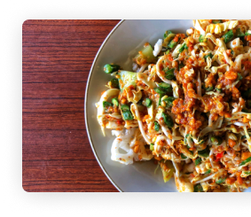
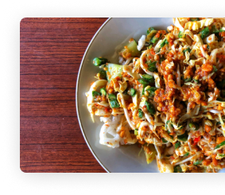
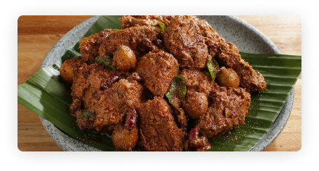
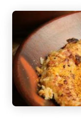
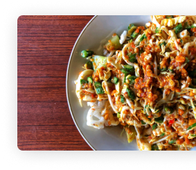

Buat Masakan Nusantara Khas Daerahmu.
Melestarikan masakan tradisional merupakah kewajiban kita
 



Melestarikan masakan tradisional merupakah kewajiban kita

Menurut https://bisnis.com/ kita memiliki lebih dari 5.300 makanan asli dari Indonesia. Kita sebagai bangsa Indonesia wajib melestarikan agar kelak anak dan cucu kita memiliki budaya Indonesia
kuliner tradisional merupakan warisan budaya. Tidak hanya pakaian
adat, kebiasaan istiadat, hingga
benda-benda peninggalan bersejarah saja yang bisa menjadi warisan
budaya, tapi kuliner tradisional
juga merupakan warisan budaya yang turun temurun
“Resepnya lumayan gampang diikuti”
“Baru nyoba padahal udah lumayan enak ehehe”
“Saya udah langganan liat tutorial disini”
“Resepnya pada cocok untuk masakan nusantara”
“Baru pertama kali coba ,ternyata lumayan mudah”
“mantap, memang betul kita harus melestarikan budaya”